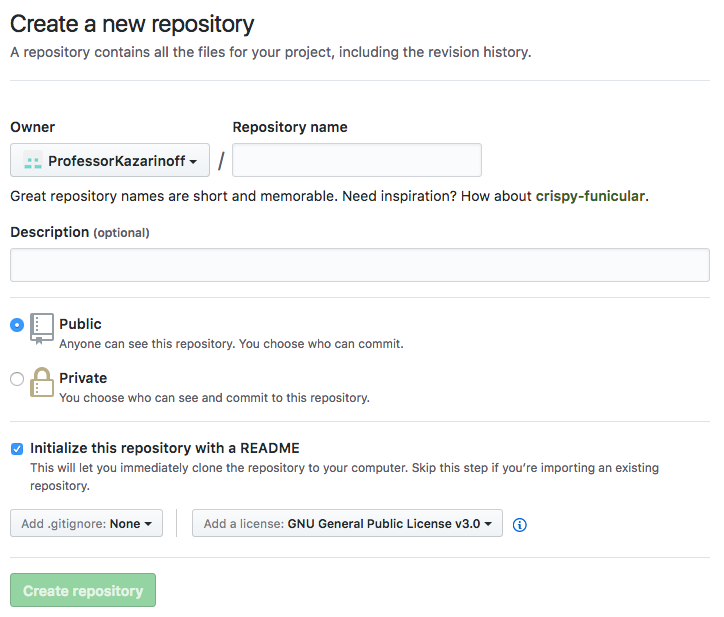

This is the second part of a multi-part series on building a web app with Python and Django. The web app will act as a resource for Engineering students at Oregon Community Colleges that want to transfer to 4-year Universities. The transfer web app will show which classes from their community college engineering program will transfer to which classes in a 4-year University engineering program. In this second post, we'll review the development environment used to set up and build the web app. This includes installing the Anaconda distribution of Python, creating a GitHub.com repo, synching a local directory to the repo on GitHub, creating a virtual environment, installing packages, starting the project and running the project for the first time.
Setting up the development environment
What does that even mean? Before we start building the Oregon College Transfer web app, we needed to make sure the necessary software, packages and settings were in place. This starts with setting up a development environment. To me, a development environment is the software on a computer that allows me to get work done. In this case the development environment means the tools necessary to build the website. A list of the tools and technologies are below:
- An operating system: This website is going to be built on machines running Windows 10
- Python: Python 3.9.6 is the most recent version of Python at the time of writing
- Anaconda: The Anaconda Prompt and the Anaconda Python distribution
- GitHub.com and git: We are going to save the code we write on GitHub.com and push the code up to Github using the command-line tool git.
- A virtual environment: A separate Python virtual environment that the web app will run in.
- Django: a Python web framework
- VS Code: a Python code editor to build and test the web app.
- Deployment Target: A place for the web app to run. Initially this will be on the Huroku free tier. Eventually we may run the website on a Digital Ocean droplet or on an AWS EC2 instance.
An operating system
I am building the web app on at least three different computers depending on where I am. These computers include:
-
Windows 10 Work Laptop
-
Windows 10 Personal Laptop
-
Linux (Ubuntu 20.04 LTS) Desktop at home.
Regardless of which computer I am using for development, the files that make up the web app will be the same because I'm using git and GitHub.com to keep everything synced. I will also keep my virtual environments the same on each computer.
Python and Anaconda
Python is a programming language. The Anaconda distribution of Python is a software download that includes the Python programing language and a couple other software tools. For this project, the Anaconda Prompt that comes with Anaconda is going to be used to set up the virtual environment.
Download the latest release of Anaconda at:
https://www.anaconda.com/products/individual
The Anaconda distribution of Python comes with an up-to-date and stable version of Python and the Anaconda Prompt. The Anaconda Prompt is useful because it allows me to run shell commands on Windows 10 machines. These are the same commands I would run in the terminal on my Linux desktop. The Anaconda Prompt makes creating and activating virtual environments easy and allows me to use git on Windows 10. Follow this post to install the Anaconda on Windows 10.
Create a new virtual environment
It is best practice to create and use a seperate virtual environment for each Python project. To create a new virtual environment, open up the Anaconda Prompt (on Windows) or a terminal (on Linux or MacOS). Let's call our new virtual environment transfer. The conda create command creates the environment and the -n staticsite flag adds the name.
> conda create -y -n transfer python==3.9.6
Note that the > character should not be typed into the Anaconda Prompt. The > character is used to show the Anaconda Prompt, not a character for you to type.
The command above creates a new virtual environment called transfer. Once the virtual environment _transfer is created, we need to activate it and start using it with the command below:
> conda activate transfer
We should now see (transfer) before the terminal prompt. This means we are using the (trasfer) virtual environment.
Install Django
Time for some fun! Installing Django. Django is a Python package used to build websites. Django is called a web framework. A web framework is a software package that scaffolds a website. Django is one of the most popular web frameworks for Python. Another popular webframework for Python is called Flask. Django is considered more opinionated than Flask and comes with more "batteries included" than Flask does. The command below installs Django into our transfer virtual environment.
(transfer) > python -m pip install pip install Django==3.2.6
We can ensure Django is installed by opening up the Python REPL from the Anaconda Prompt and seeing if we can import Django and invoke the .__version__ attribute defined by many Python packages.
(transfer) > python
>>> import django
>>> django.__version__
'3.2.6'
You can type exit() to exit out of the Python REPL.
Create a GitHub.com account and create a new repository
We are going to save the code we write on GitHub.com. GitHub.com is a website programers use to save and share code. We'll use git to push the code up to GitHub.com. Git is version control command-line utility. Using git means changes made to files on one computer can be synced with the same files on another computer. Github.com is the where the code will be stored and integrates easily with git.
To sign up for a free github.com account go here:
The account activation screen looks something like:

Once the account is set up, log in and create a new repository. Use the [+] button in the upper right-hand menu:

I named the new repository: transfer and included both a README.md and a GNU General Public License v3.0. Also include the Python .gitignore file.

Make a directory for the site and link it to GitHub
Once the GitHub repo (short for repository, basically a folder with files on github.com) is set up, we need to link the remote repo on GitHub to the local version of the code on our computer.
The local version is in a folder call transfer in the Documents folder. The transfer folder will contain all the files used to build the site.
(transfer) > cd Documents
(transfer) > mkdir transfer
(transfer) > cd transfer
We can use git to keep the contents of the local transfer folder in sync with the contents of the transfer repo on github.com. The command git init initiates or creates the local repository. The command git remote add origin followed by the url of our GitHub repo links our local folder to the remote repo on github.com. Note the web address ends in .git. If you are following along and want to build your own web site, make sure to change username to your github.com username and reponame to your github.com repo name.
> git init
> git remote add origin https://github.com/username/reponame.git
Now for the git magic. On github.com we have a README.md file, a licence and a .gitignore file. But the local transfer folder on our computer is empty. So the two folders aren't in sync. To make the contents of each folder identical, we pull the files from github.com down onto our local computer. A git pull "pulls" or gets the files from github.com and copies them to the local transfer folder.
> git pull origin main
If you look in the local transfer folder you should now see the following three files:
transfer/
├───.gitignore
├───LICENSE
└───README.md
Now each time we work on the website, navigate to the transfer-app folder. Before we modify or write any code, key in the command:
> git pull origin main
After the pull, the transfer-app folder is up-to-date with the newest version of all the files on github.com.
Create a requirements.txt file and a runtime.txt file
Our project on Github is in sych with our project on our local computer. Next, let's create two new files that shows which Python version we are using and which packages we have installed into our virtual environment.
Create a new file in the transfer/ directory called runtime.txt. Inside the file, add the Python version running in our virtual environment as shown below:
# runtime.txt
python-3.9.6
Next, we'll create a requirements.txt file in the transfer/ folder. requirements.txt shows which packages we installed into our virtual environment. This file can be created by pip, the Python package manager we used to install Django earlier.
Enter the command below into the Ananconda Prompt to create requirements.txt
(transfer) > python -m pip freeze > requirements.txt
There should now be 4 files in the transfer/ directory. The files are shown below.
transfer/
├───.gitignore
├───LICENSE
├───README.md
└───requirements.txt
Push changes up to GitHub.com
After working on the project, the last thing to do before shutting down the computer for the day is add all the changes to git with the command git add . (note there is a space between the add and the period .). Then commit those changes locally with the line git commit -m "commit message" (note there are double quotes "commit message" used around the commit message), and finally push the changes up to github.com with git push origin main. These commands ensure all our local computer and the github.com repo contain the same files.
> git add .
> git commit -m "commit message"
> git push origin main
Now the version of the site up on github.com is the same as the version of the site on our local computer.
Summary
In this post, we reviewed the development environment that needs to be set up to build our website. The development environment included:
- Windows 10 Laptop
- Anaconda distribution of Python
- Anaconda Prompt
- Virtual environment
- Django
- git and github.com
Next Steps
In the next step of building the website will be to start a new django project and make sure that we can run the development server locally.